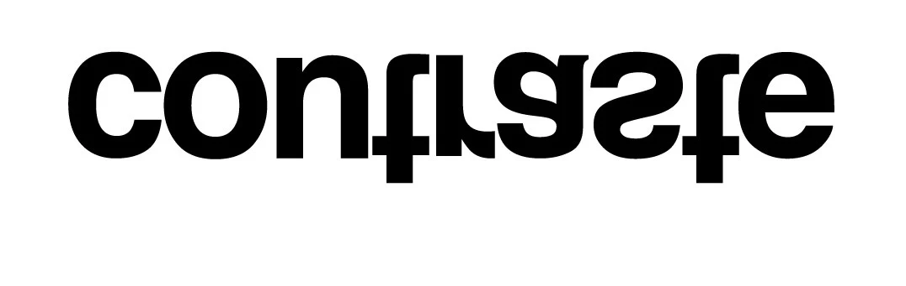
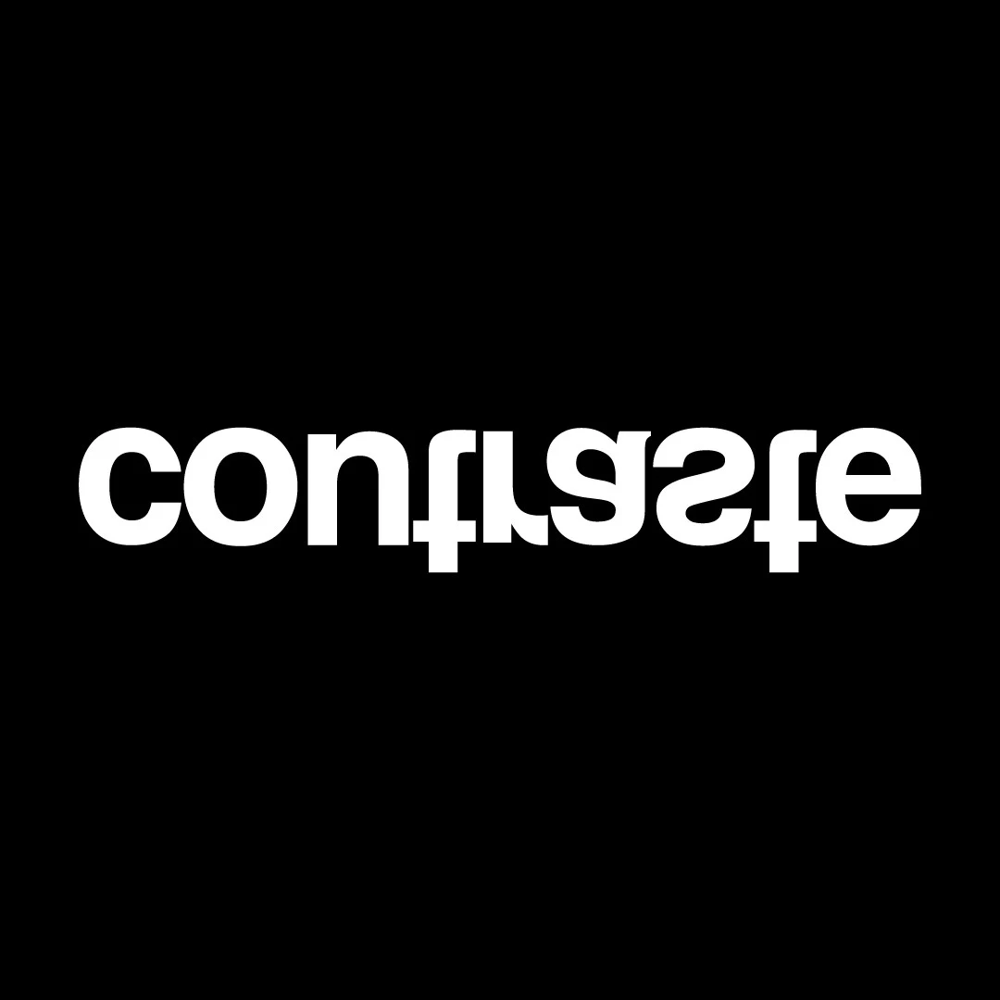
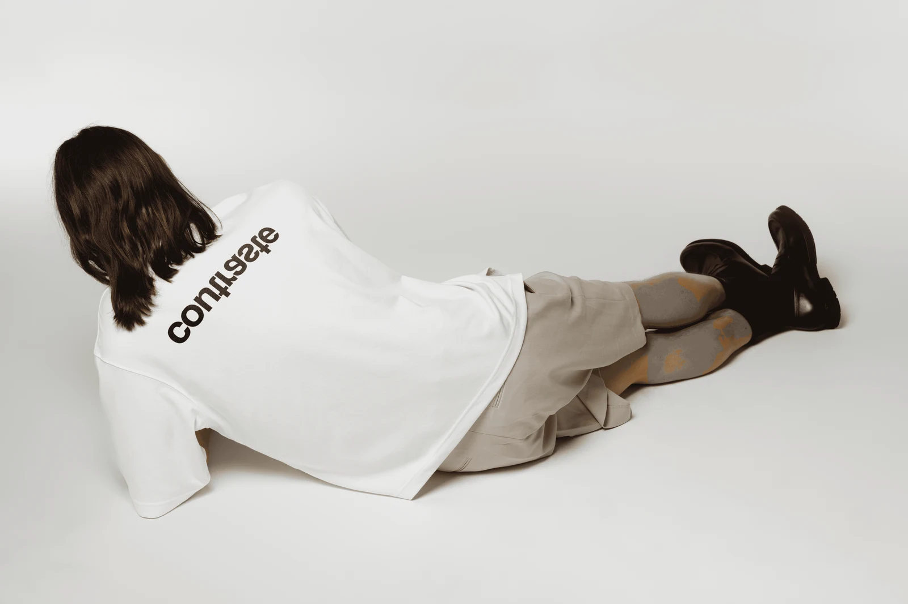
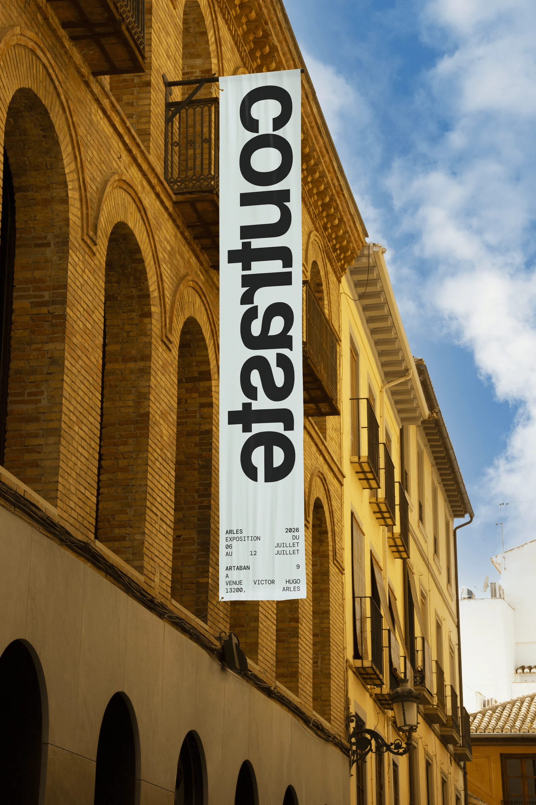
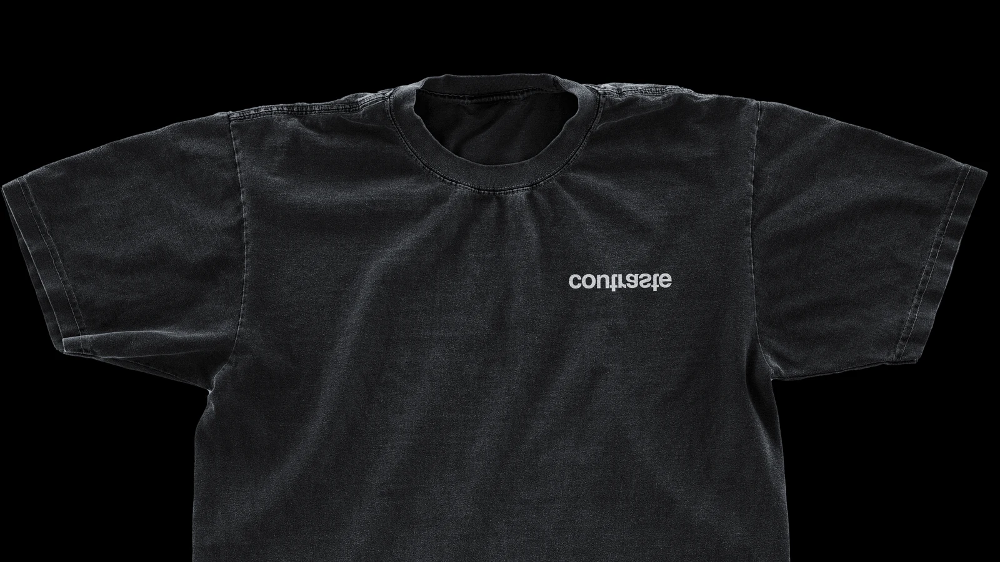

CONTRASTE
VISUAL IDENTITY
2026
Designed to position the event at the intersection of high-end fashion and contemporary art galleries, the visual identity for Contraste draws direct inspiration from Colors' role as a production house: acting as a reflective surface that reveals and amplifies talents. The logo translates this concept of reflection through an inverted typographic symmetry that intrigues and disrupts standard viewing. This effect is grounded by an absolute black-and-white minimalist guidelines, pairing the institutional presence of Helvetica Bold with the technical precision of the monospaced DM Mono.




